Instrucciones
- Instalar windows server y destacar las caracteristicas de active directory y ejemplos.
Requerimientos
- Conexión a internet para poder descargar Windows Server
- USB con - por lo menos - 5 GB libres.
- Un ISO de Ubuntu para poder arreglar el boot que se perderá.
Comencemos
- Lo primero que haremos será acceder a la siguiente liga para descargar Windows Server. Descargaremos el ISO y lo montaremos en una memoria USB como lo hemos ya hecho con anterioridad para cualquier otro sistema operativo
- Una vez realizado esto (o mientras se descarga el ISO) nos dirigiremos a la computadora en donde instalaremos el S.O. y generaremos una partición de disco, asegurándonos de que sea en formato NTFS y que tenga un espacio suficiente para poder instalar y manejar Windows Server (Esto se debe hacer porque a Windows no le gusta tener que compartir espacio con otro Windows, a diferencia de Linux, que honestamente no le importa; no es egoísta). Yo le asignaré 100GB. Ya hemos visto en una práctica anterior cómo generar una partición, así que podemos remitirnos a ella en caso de dudas.
- Ya que se haya descargado el ISO, que lo hayamos montado en la USB y que tengamos la partición hecha, apagaremos la computadora objetivo y al volverla a encender nos aseguraremos de que corra con la memoria que tiene Windows Server. De esta manera podremos proceder con la instalación. Observaremos que la interfaz y los pasos son bastante similares a aquellos para instalar Windows 10.
- Lo que haremos ahora será montar Ubuntu en una memoria y correrlo en la computadora objetivo como si lo fuéramos a instalar, pero en lugar de elegir la opción
Instalar Ubuntu
, elegiremos la opciónProbar Ubuntu
. - Una vez entrando al sistema, abriremos una consola de comandos y escribiremos lo siguiente:
- Terminado esto se instalará y ejecutará la herramienta de arreglo de GRUB de Linux, lo que hará que podamos volver a correr Ubuntu como antes.
- Cuando aparezca el programa, elegiremos la primera opción, que es la reparación recomendada:
- Terminado este proceso deberíamos tener recuperado el GRUB, de manera que podremos acceder nuevamente a Ubuntu:
- Y si seleccionamos Windows desde GRUB, nos aparecerá la opción de elegir entre ejecutar Windows, o Windows Server.
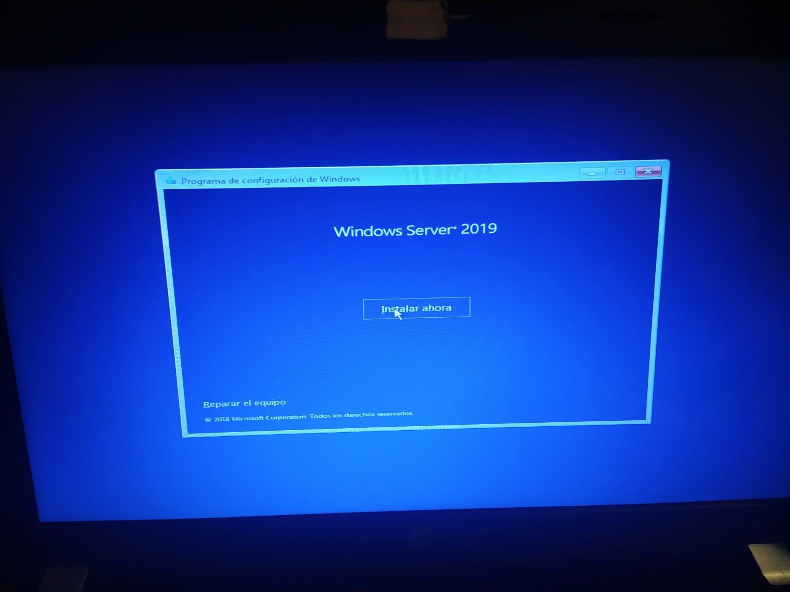
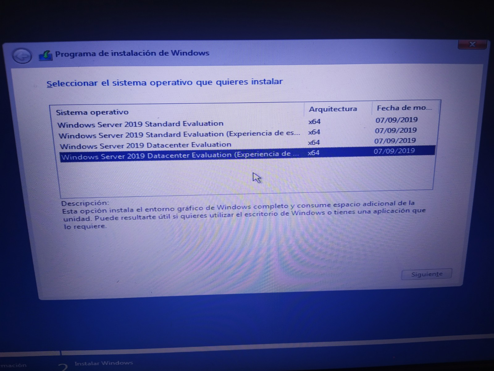
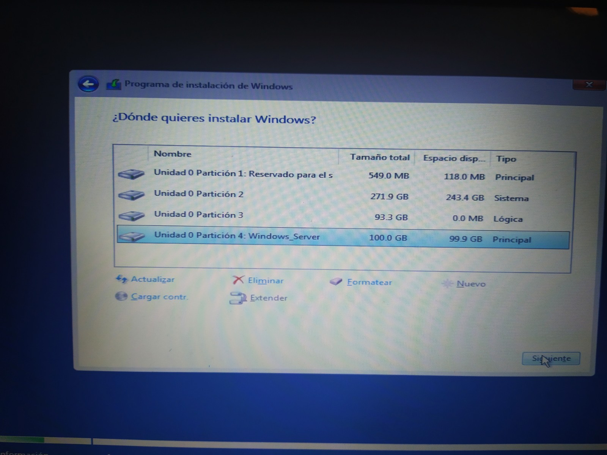
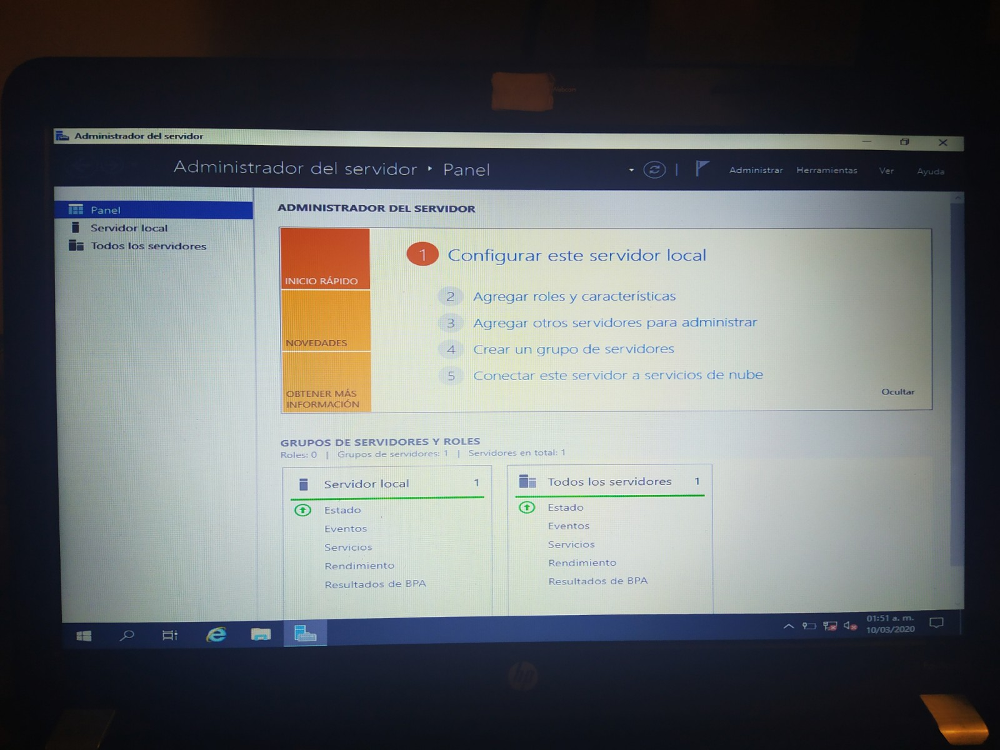
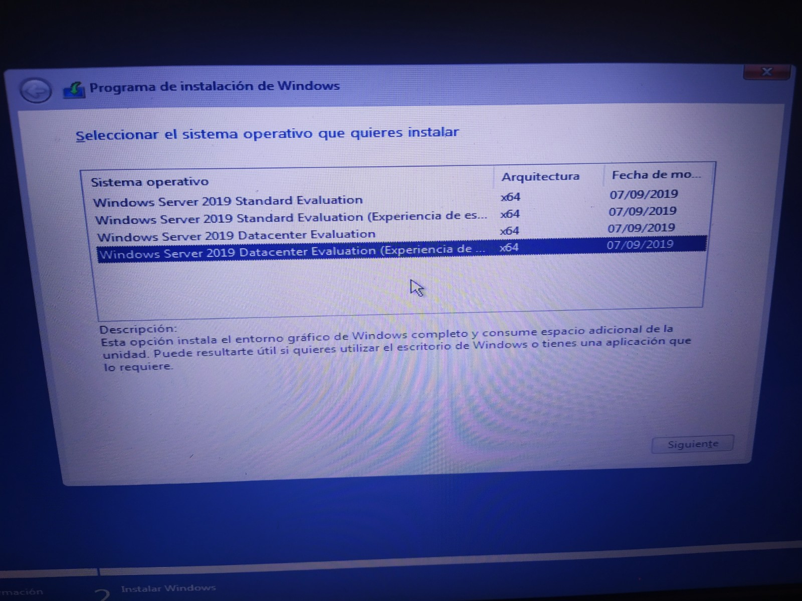
Elegimos la opción Datacenter Experiencia de Escritorio, ya que ésta es la versión más completa y la que viene con interfaz gráfica como Windows. Si no seleccionamos la opción de escritorio, terminaremos solo con una terminal de comandos.
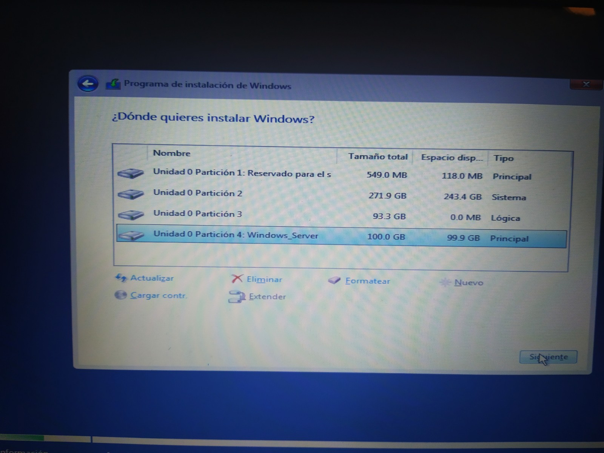
Elegimos la partición que designamos previamente.
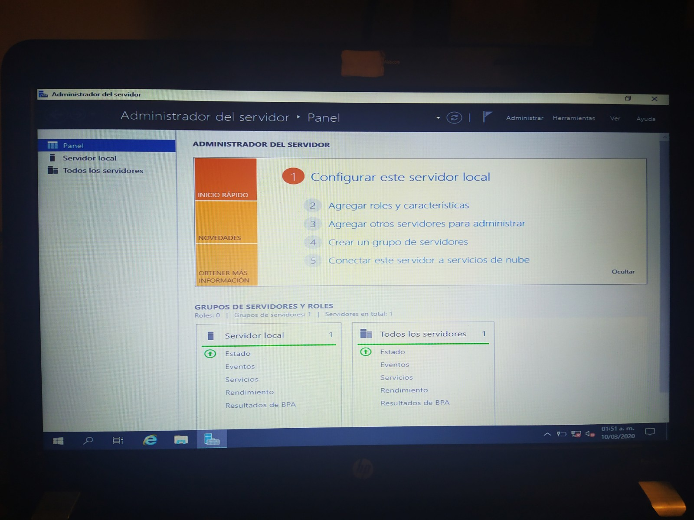
Una vez terminada la instalación podremos acceder al sistema operativo y ver su funcionamiento. El problema que tendremos aquí es que la instalación de Windows habrá borrado GRUB (que es el boot de Linux que nos permitía arrancar Windows o Ubuntu).
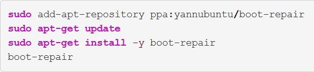
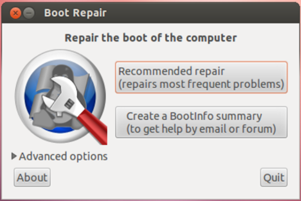
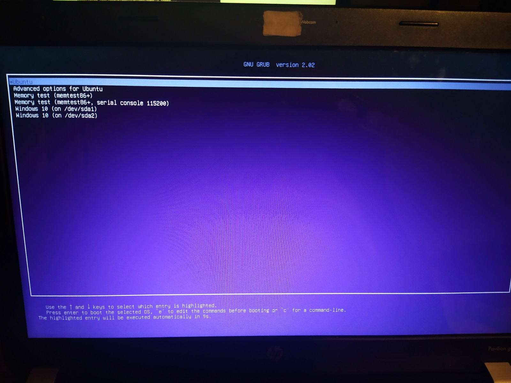
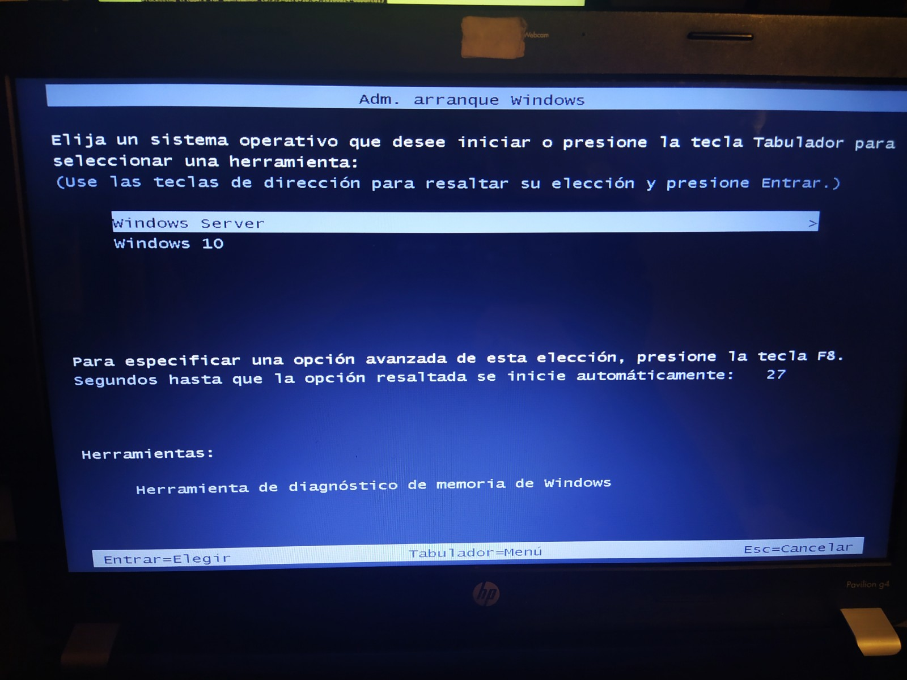
Principales Características de Active Directory y Ejemplos
- Determinación de cuotas o límites de almacenamiento de datos por usuario.
- Tráfico seguro del Protocolo de Acceso de Directorio Ligero (LDAP), por medio de herramientas como: Dsrm.exe, Dsmove.exe, Dsadd.exe, Dsmod.exe, Dsget.exe, Dsquery.exe, etc...
- Habilidad para agregar controladores de dominio adicionales por medio de backup media.
- Generar Particiones de Directorios de Aplicaciones, incluyendo la posibilidad de duplicar las mismas.
- Capacidades de búsqueda eficientes, por medio de protocolos como: LDAP, SSL, TCP e IP.
- Cuentas de servicio administradas por Grupo.
- Control de Acceso Dinámico, para controlar y auditar el flujo de información.
- Visor de Historial por medio de Windows PowerShell, para poder mejorar la productividad al ver traducidas las acciones en comandos, y poder ahorrar tiempo en el futuro.
- Advanced Threat Protection (ATP). Servicio proporcionado por Windows para mejorar la seguridad en el grupo de trabajo.
- Política de Contraseñas establecida con bases firmes para asegurar un control en los accesos de manera adecuada.